Iguana is a genus of herbivorous lizards that are native to tropical
areas of Mexico, Central America, South America, and the Caribbean. The genus was first described in 1768 by
Austrian naturalist Josephus Nicolaus Laurenti in his book Specimen Medicum, Exhibens Synopsin Reptilium
Emendatam cum Experimentis circa Venena. Two species are included in the genus Iguana: the green iguana, which
is widespread throughout its range and a popular pet, and the Lesser Antillean iguana, which is native to the
Lesser Antilles and endangered due to habitat destruction, introduced feral predators, hunting, and
hybridization with introduced green iguanas.
The word "iguana" is derived from the original Taino name for the species, iwana.
In addition to the two species in the genus Iguana, several other related genera in the same family have common
names of the species including the word "iguana".
Iguanas can range from 1.5 to 1.8 metres (5 to 6 ft) in length, including their tail. The two species of
lizard
within the genus Iguana possess a dewlap and a row of elongated scales running from the midline of their
necks
down to their tails. Iguanas have varying types of scales covering different areas of their body, for
example,
there are some large round tuberculate scales scattered around the lateral region of the neck among smaller,
overlapping scales. The scales on the dorsal trunk of their body are also thicker and more tightly packed
than those on the ventral side. These scales may be a variety of colors and are not always visible from
close
distances. They have a large round scale on their cheeks known as a sub-tympanic shield.
Iguanas have keen vision and can see shapes, shadows, colors, and movement at long distances. Their visual
acuity enables them to navigate through crowded forests and to locate food. They employ visual signals to
communicate with other members of the same species.
The tympanum, the iguana's eardrum, is located above the sub-tympanic shield (or "ear shield") behind each
eye.
Iguanas are often hard to spot, as they tend to blend into their surroundings and their coloration enables
them
to hide from larger predators.
Like most reptiles, an iguana has a three-chambered heart with two atria, one ventricle, and two aortae with
a
systemic circulation.
The muscles of an iguana are very light in color, this is due to the high proportion of fast glycolytic
muscle
fibers. These fibers are not very vascularized and are low in myoglobin, giving them their pale look. This
high
density of fast glycolytic muscle fibers allows iguanas to move very quickly for a short period of time,
which
facilitates short bursts of movement but is inefficient for long duration movement, since cellular
respiration
in fast glycolytic muscle fibers is anaerobic.
Several species of lizard, including the iguana, have a pale scale towards the back of their head marking the parietal eye. This organ is photosensitive to changes in illumination and sends signals to the pineal gland signaling the change between day and night. A photopigment commonly found in the lamprey, known as parapinopsin, is also found in the iguana and is photosensitive to UV light and aids in the signaling between day and night.
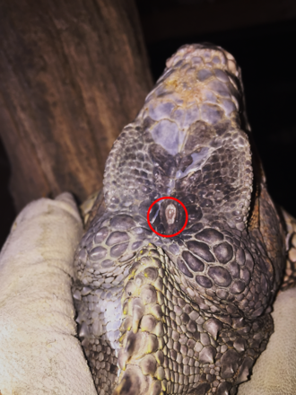
Iguanas have developed a herbivorous lifestyle, foraging exclusively on vegetation and foliage. In
order to
acquire, process and digest plant matter, herbivorous lizards must have a higher bite force relative
to their
size in comparison to carnivorous or omnivorous reptiles. The skull of the iguana has undergone
modifications
resulting in a strong bite force and efficient processing of vegetation, according to one study.
In order to accomplish this biomechanically, herbivorous lizards (such as the iguana) have taller
and wider
skulls, shorter snouts, and larger bodies relative to carnivorous and omnivorous reptiles.
Increasing the
robusticity of the skull allows for increased muscle presence and increases the ability of the skull
to
withstand stronger forces.
Furthermore, the teeth of the iguana are acrodontal, meaning that their teeth sit on top of the
surface of the
jaw bone and project upwards. The teeth themselves are small and serrated - designed to grasp and
shear
food.
| 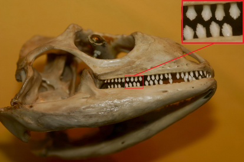 | 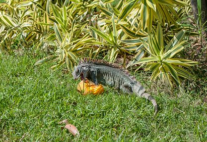 |
Male iguanas, like other male examples of Squamata, have two hemipenes. During copulation one hemipene will be inserted into the female's cloacal vent. Females can store sperm from previous mates for several years to continue to fertilize her eggs in case she finds no male within her territory when she is ready to lay again.
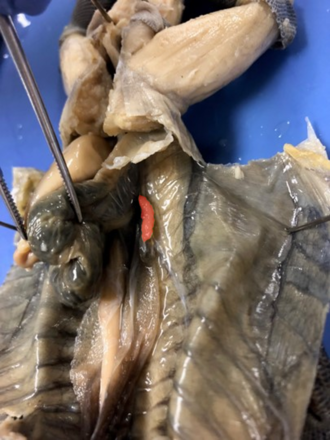Iguanas tend to follow a promiscuous or polygynadrous mating style during the dry season. Mating during the dry season ensures that their offspring will hatch during the wet or rainy season when food will be more plentiful. Females control large territories where they make several nests. Males compete amongst each other for the females in an area and mark their won territory with a pheromone secreted from the femoral pores on the dorsal side of their hind limbs. Male behavior during sexual competition involves head bobbing, extending and retracting their dewlap, nuzzling and biting the necks of females, and on occasion, changing color. Once a female chooses a male, he will straddle the female and hold her in place by biting onto her shoulder, which sometimes leaves scars on females. After copulation, eggs are laid within several nests and allowed to incubate. This low level of parental intervention with their offspring makes iguanas an example of r-strategy reproduction.
A phylogeny based on nuclear protein-coding genes, reviewed by Vidal and Hedges (2009) suggested that the subclade Iguania is in a group with snakes and anguimorphs (lizards). These groups share an oral gland capable of secreting toxins (a derived trait). On the other hand, the phylogeny based on whole mitochondrial genomes, proposed by Rest et. al. (2003), places the green iguana as the closest relative of the mole skink (Plestiodon egregius). Lepidosaurs are reptiles with overlapping scales, and within this group both iguanians and tuataras (Sphenodons) project their tongue to seize prey items instead of using their jaw, which is called tongue prehension. However, iguanians are the only lineage within Squamata that displays this trait, meaning that it was gained independently in both iguanians and tuataras. Iguanians are also the only squamates that primarily use their sight to identify and track prey rather than chemoreception or scent, and employ an ambush technique of catching prey instead of active searching.
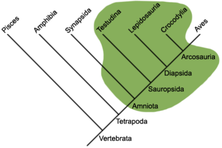Up next, you can find a table with information about the existing iguana species.
| Image | Scientific name | Common Name | Locations |
|---|---|---|---|
| 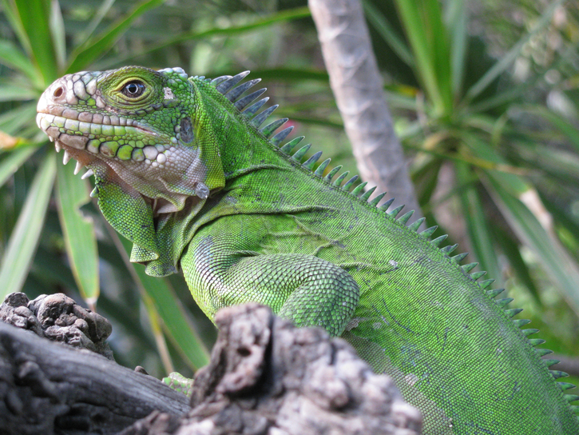 | Iguana delicatissima | Lesser Antillean iguana | The Lesser Antilles on Saint Barth, Anguilla, Sint Eustatius, Guadeloupe, Dominica, and Martinique |
| 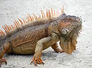 | Iguana iguana | Green iguana | Southern Mexico to central Brazil, the Dominican Republic, Paraguay, Bolivia and the Caribbean; specifically Grenada, Aruba, Curaçao, Trinidad and Tobago, St. Lucia, St. Vincent, and Útila |
Below, you can find some images of Green Iguanas.
| 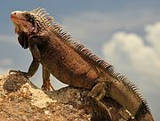 | 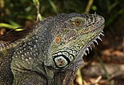 | 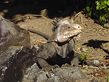 |
| 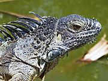 | 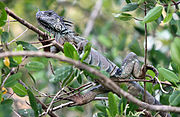 | 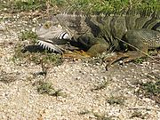 |
| 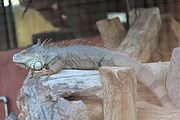 |
|
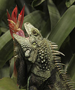 |